La forma más fácil de añadir contornos, brillos, rellenos y detección de bordes a tus juegos en el Universal Render Pipeline. Se configura sin código y, si lo necesitas, también desde código.
¿Buscas algo concreto? Pulsa CtrlK (o /) para buscar en toda la documentación.
Instalación
Añade el paquete al proyecto y deja que Easy Outline configure tus renderers. Son dos pasos.
Requisitos
Unity 6000.0 o superior con URP 17, o Unity 2022.3 LTS con URP 14.0.8 o superior.
El Universal Renderer (el Renderer 2D no tiene textura de profundidad).
En Unity 6, Render Graph activado (es la opción por defecto).
Paso 1 · Añade el paquete
Abre Window › Package Manager.
Elige My Assets, busca Easy Outline y pulsa Download y después Import.
Window › Package Manager › + › Add package from disk… y selecciona el archivo package.json del paquete.
Window › Package Manager › + › Add package from git URL… y pega la URL del repositorio. Si el paquete está dentro de un proyecto, añade la ruta al final:
Copia la carpeta com.easyoutline.urp dentro de la carpeta Packages/ de tu proyecto. Unity la detecta al volver al Editor.
Paso 2 · Configura los renderers
Ejecuta Tools › Easy Outline › Set Up Renderers. Easy Outline busca los Universal Renderer Data de tu proyecto (el del pipeline por defecto y los de cada nivel de calidad) y les añade el renderer feature.
Si se te olvida este paso, el Inspector de Outline Object te avisa y muestra un botón Set Up. También puedes añadirlo a mano: selecciona tu renderer y pulsa Add Renderer Feature › Easy Outline.
Importar las muestras (opcional)
En Package Manager › Easy Outline › Samples encontrarás:
Demo: una sala con 12 expositores, uno por función. Ver La escena Demo.
Scripting Examples: scripts cortos que usan la API.
Ejecutar los tests (opcional)
Añade el paquete a testables en Packages/manifest.json y abre Window › General › Test Runner:
"testables": [ "com.easyoutline.urp" ]
Tu primer contorno
Esta guía es para tus primeros cinco minutos con Easy Outline. Al terminar tendrás un objeto contorneado y un estilo propio que podrás reutilizar.
Antes de empezar, asegúrate de haber hecho la instalación (sobre todo Tools › Easy Outline › Set Up Renderers).
Dos formas de trabajar, tú eliges. Puedes contornear objetos con un componente (lo más fácil) o sin componentes, marcándolos con una Rendering Layer (lo más eficiente para muchos objetos). Ninguna es “más avanzada”: usan el mismo sistema y puedes mezclarlas.
Paso 1 · Contornea un objeto
Selecciona uno o varios objetos en la jerarquía.
Haz clic derecho y elige Easy Outline › Add Outline To Selection (también en el menú GameObject).
Verás al momento un contorno naranja de 4 píxeles, también en la vista Scene. Es el perfil por defecto.
En el Mesh Renderer del objeto, abre Rendering Layer Mask y activa una capa extra (por ejemplo la 8). Deja también Default.
Selecciona tu Universal Renderer Data, despliega Easy Outline y pulsa + en Outline Layers.
En la nueva capa, elige esa Rendering Layer y pulsa New junto a Profile.
El aspecto de un contorno lo define un Outline Profile: un asset con la técnica, el color, el grosor y el resto de ajustes.
Crea el perfilEn el componente Outline Object, pulsa New junto a Profile y elige dónde guardarlo.
Elige la técnicaFast (fino y barato), Soft (brillo), Wide (grueso y uniforme) o None (solo relleno). ¿Dudas? Mira ¿Qué técnica elijo?
Ajusta color y grosorDespliega Profile Settings en el propio componente: los cambios se ven al instante.
Los perfiles son compartidos: si cambias uno, cambian todos los objetos que lo usan. Para variar un solo objeto usa los overrides del paso 3.
Paso 3 · Cambia un solo objeto
En Outline Object, activa la casilla de Color, Width u Opacity y ponle otro valor. Solo afecta a ese objeto; el resto sigue usando el perfil.
Paso 4 · Actívalo desde el juego
Añade using EasyOutline; y llama a OutlineObject.Add:
using EasyOutline;
using UnityEngine;
public class Pickup : MonoBehaviour
{
public OutlineProfile highlight;
void OnMouseEnter() => OutlineObject.Add(gameObject, highlight);
void OnMouseExit() => OutlineObject.RemoveAll(gameObject);
}
¿Qué está pasando? Add añade un componente Outline Object (o reutiliza el que ya tenga) con ese perfil, y RemoveAll lo quita. Para encender y apagar sin crear componentes, usa Show() y Hide().
Un contorno es un componente: actívalo o desactívalo como cualquier otro. Por ejemplo, desde un UnityEvent de un botón o de un trigger, arrastra el objeto y elige OutlineObject › enabled.
¡Ya está! A partir de aquí, las Guías del índice explican cada efecto paso a paso.
La escena Demo
Una sala de exposición con 12 expositores numerados, uno por función. Cada uno tiene una placa que explica qué muestra y dónde mirar. No hace falta pulsar Play: todo se ve en la vista Scene.
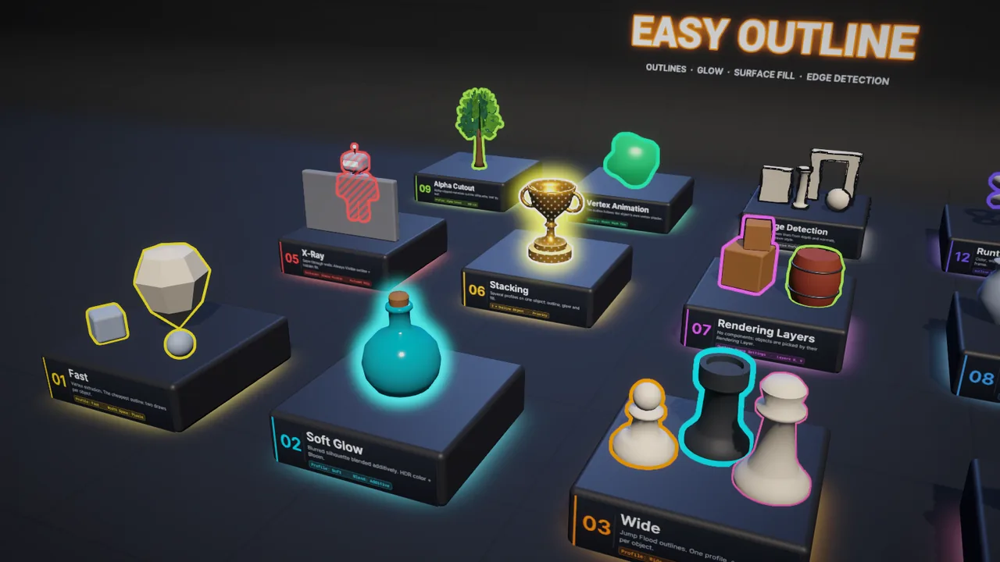
Cada placa indica la función, una frase y el ajuste clave que hay que mirar.
Abre la escenaAssets/Samples/Easy Outline/…/Demo/Scenes/Easy Outline Demo.
ExploraLa vista Scene se coloca sola frente a los expositores y se selecciona el objeto Easy Outline Demo. Su Inspector tiene un botón por expositor para encuadrarlo.
Los 12 expositores
#
Expositor
Qué muestra
Guía
01
Fast
Contorno de grosor constante en objetos de distinto tamaño
Con E la detección de bordes pasa a toda la escena.
La escena no modifica tus renderers: sus capas y su detección de bordes viven en un componente Outline Scene Settings. Para ver el Bloom, tu renderer debe tener el post-procesado activo y la cámara HDR.
Conceptos básicos
Easy Outline tiene pocas piezas. Con entender estas cinco ya puedes hacer cualquier cosa.
Los objetos que comparten perfil se dibujan juntos, como un grupo. El coste de las pasadas a pantalla completa depende del número de perfiles visibles, no del número de objetos.
Usa pocos perfiles bien elegidos (“Hover”, “Selección”, “Enemigo”…) en lugar de uno por objeto. Para variaciones puntuales, usa los overrides de Outline Object.
¿Qué técnica elijo?
Cada perfil usa una técnica. Esta tabla te ayuda a elegir en segundos.
Quiero…
Usa
Por qué
Muchos objetos, móviles o contornos finos
Fast
Sin pasadas a pantalla completa: el más barato.
Un halo o brillo suave
Soft
Silueta difuminada; con HDR y Bloom parece neón.
Un contorno grueso y perfecto
Wide
Grosor exacto hasta 128 px, esquinas redondeadas.
Pintar el interior del objeto
Fill
Se suma a cualquier técnica, o va solo con None.
Líneas en toda la escena (cómic)
Edges
Efecto a pantalla completa, no por objeto.
Compáralas
Fast: el mismo grosor en píxeles en objetos grandes y pequeños.
Soft aditivo con Bloom.
Wide: color y grosor distintos por pieza.
Rellenos de rayas, puntos y textura.
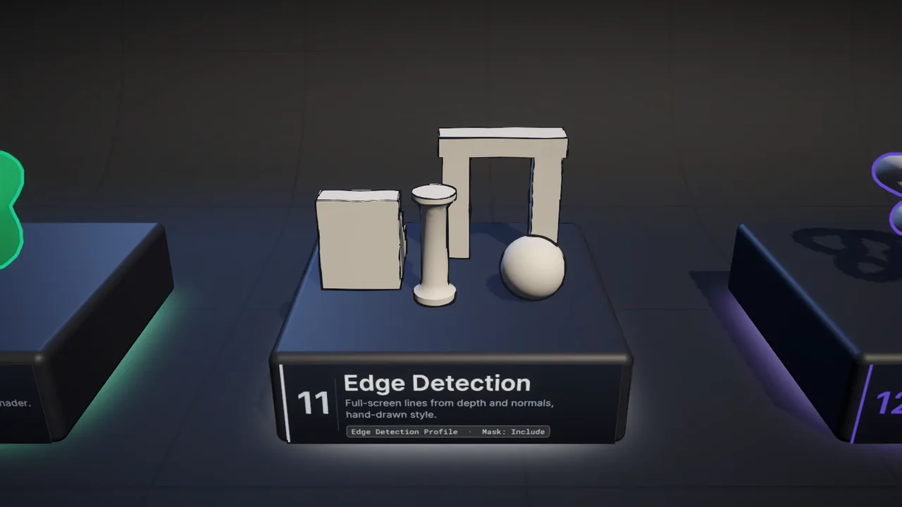
Detección de bordes dibujada a mano.
Detalle técnico
Técnica
Cómo funciona
Coste
Ajustable por objeto
Fast
Extrusión de vértices + stencil
2 draws por objeto
color, grosor, opacidad
Soft
Máscara + blur separable
1 draw/objeto + 3 a pantalla completa
color, opacidad
Wide
Máscara + Jump Flood
1 draw/objeto + 2 + log₂(grosor)
color, grosor, opacidad
Fill
Máscara + patrón en pantalla
+1 a pantalla completa
opacidad, color opcional
Contornos finos y baratos Fast
La técnica más rápida: sin texturas intermedias ni pasadas a pantalla completa. Perfecta para muchos objetos, móviles y contornos de pocos píxeles.
Expositor 01 de la Demo: el grosor en píxeles es el mismo en los tres objetos.
Cómo se hace
Crea un perfilAssets › Create › Easy Outline › Outline Profile y pon Technique en Fast.
Elige el espacio del grosorWidth Space: Screen Pixels (igual de grueso a cualquier distancia) o World Units (más fino al alejarse).
AsígnaloA un Outline Object o a una Outline Layer.
Esquinas abiertas: normales suavizadas
Fast “infla” el objeto a lo largo de sus normales. En mallas con aristas duras (cubos, low-poly) las caras se separan y el contorno se abre en las esquinas. La solución son las normales suavizadas:
Opción
Cuándo
Automático (por defecto)
Outline Object las genera para mallas con Read/Write activado.
Tools › Easy Outline › Bake Smoothed Normals For Selection
Mallas sin Read/Write, skinned o contorneadas por capas.
Assets › Easy Outline › Toggle Smoothed Normals On Import
Que se bakeen cada vez que se importa el modelo.
Las normales suavizadas se guardan en el canal UV3. Si tu malla usa UV3 para otra cosa, desactiva Smooth Normals en el perfil.
Limitaciones
No sigue la animación hecha en el vertex shader (sí el skinning y los blend shapes). Para eso usa Wide o Soft con Object Depth Pass.
Usa el bit 3 del stencil de la cámara.
Brillo y glow Soft
Un halo suave alrededor del objeto. Con color HDR, modo Additive y Bloom parece luz de neón.
Expositor 02: Soft aditivo con Bloom y opacidad pulsante.
Cómo se hace
Técnica SoftEn el perfil, Technique = Soft.
RadioWidth es el radio del brillo en píxeles (prueba entre 24 y 64).
Modo aditivoBlend = Additive para sumar luz en lugar de pintar encima.
Más intensidadSube Brightness por encima de 1 (o usa un color HDR) para que el Bloom lo recoja.
Ajustes útiles
Ajuste
Efecto
Intensity
Hace que el brillo llegue más lejos.
Hardness
0 = degradado suave, 1 = borde duro.
Resolution
Half o Quarter: casi idénticos para brillos y mucho más baratos.
Draw Inside
Dibuja el brillo también sobre el objeto.
¿No ves el Bloom? Comprueba que la cámara tiene Post Processing y HDR activos y que hay un Volume con Bloom.
En Soft el radio pertenece al perfil: el override de Width por objeto no tiene efecto.
Contornos gruesos Wide
Contornos de grosor exacto y uniforme (hasta 128 px) con esquinas redondeadas. Es la técnica por defecto.
Expositor 03: un solo perfil; cada pieza cambia color y grosor con overrides.
Cómo se hace
Técnica WideTechnique = Wide y elige Width en píxeles.
SuavizadoSoftness controla el antialiasing del borde exterior (1 px va bien).
Variaciones por objetoActiva los overrides de Color y Width en cada Outline Object.
Wide cuesta casi lo mismo con 1 objeto que con 100 del mismo perfil: el algoritmo trabaja sobre la pantalla, no sobre cada objeto.
Si la plataforma no puede renderizar texturas de coma flotante de dos canales (algunos WebGL y Android antiguos), Wide se dibuja automáticamente como Soft y el Inspector lo avisa.
Rellenos con patrones Fill
Pinta el interior de la silueta con un color, rayas, puntos, damero o tu propia textura. Ideal para estados (“seleccionado”, “bloqueado”) y para siluetas ocultas.
Expositor 04: rayas animadas, puntos y una textura de trama.
Cómo se hace
Activa el rellenoEn cualquier perfil, despliega Surface Fill y marca Enabled. Funciona con cualquier técnica, incluso con None (solo relleno).
Elige el patrónSolid, Stripes, Dots, Checker o Texture.
AjustaScale (tamaño en píxeles), Angle, Thickness y Scroll para animarlo.
Patrón
Ajustes
Solid
Color (el alfa es la opacidad).
Stripes · Dots
Scale, Angle, Thickness, Scroll.
Checker
Scale, Angle, Scroll.
Texture
Texture (con Wrap Mode: Repeat), Scale, Angle, Scroll. El alfa de la textura define el dibujo.
Use Object Color tiñe el relleno con el color de contorno de cada objeto: un solo perfil sirve para objetos de colores distintos.
Ver a través de paredes
Muestra aliados, objetivos o al jugador cuando quedan detrás de un obstáculo. Se controla con el ajuste Occlusion del perfil.
Perfil de contornoWide, Occlusion = Always Visible, Priority = 1.
Perfil de rellenoTechnique = None, Occlusion = Occluded Only, Surface Fill con rayas y un poco de Scroll.
CombínalosAñade dos Outline Object al personaje, uno con cada perfil. Ver Combinar varios efectos.
Los objetos eliminados por Occlusion Culling no se dibujan, así que tampoco su contorno de rayos X. Si un objeto parpadea como “oculto”, sube Depth Bias en el feature.
Combinar varios efectos
Un objeto puede tener varios estilos a la vez: un brillo, un contorno encima y un relleno. Cada perfil aplica su efecto.
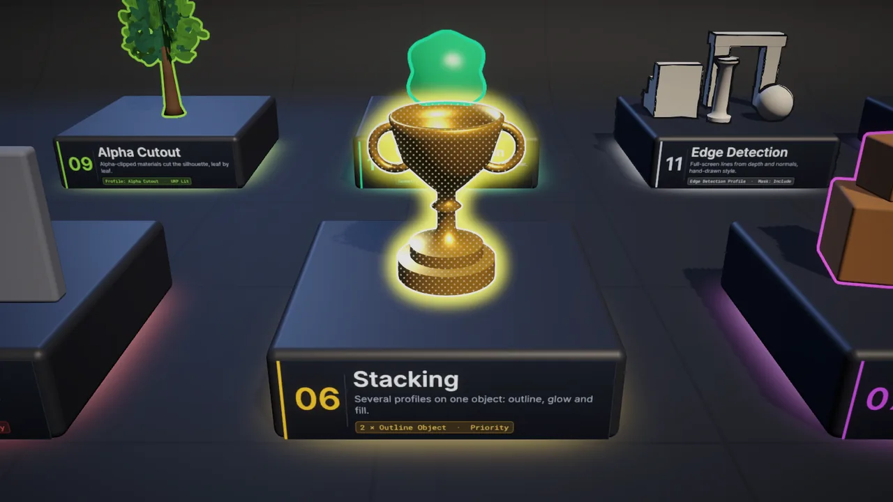
Expositor 06: Soft dorado (prioridad 0) + Wide blanco con relleno de puntos (prioridad 1).
Cómo se hace
Añade varios componentesPon dos o más Outline Object en el mismo GameObject, cada uno con su perfil.
Ordena con PriorityLos perfiles con Priority mayor se dibujan encima.
Reglas de orden
Se dibuja por Priority ascendente; a igual prioridad, en el orden de la pila de capas y después en el de aparición de los componentes.
Dentro de un perfil, el relleno se dibuja antes que el contorno.
Un objeto puede estar en varias Outline Layers y tener componentes a la vez.
Muchos objetos sin componentes
Marca objetos con una Rendering Layer y todos se contornean con el mismo perfil. Es la opción más eficiente: compatible con el SRP Batcher, el GPU Resident Drawer y Entities Graphics.
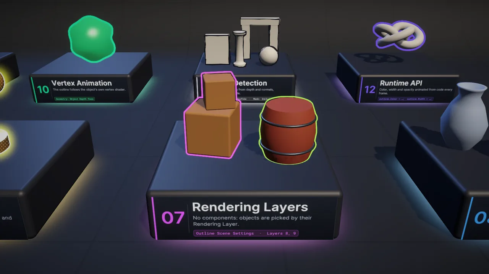
Expositor 07: las cajas usan la capa 8 (Wide) y el barril la capa 9 (Fast). Ninguno tiene componentes.
Cómo se hace
Pon nombre a la capa (opcional)Unity 6: Project Settings › Tags and Layers › Rendering Layers. Unity 2022.3: Project Settings › Graphics › URP Global Settings.
Marca los objetosEn el Rendering Layer Mask de cada renderer, activa la capa. Desde código: OutlineRenderingLayers.Set(objeto, mascara, true).
Añade una Outline LayerEn el feature (para todo el proyecto) o en un Outline Scene Settings (solo esa escena): elige la capa y un perfil.
Las Rendering Layers también controlan las Light Layers. Deja la capa Default activada en los objetos y usa capas extra para los contornos.
Para encender o apagar el contorno de un objeto concreto, cambia su Rendering Layer Mask. Para apagar todos a la vez, desactiva la Outline Layer (Enabled).
Resaltar y seleccionar con el ratón
El clásico de los juegos de estrategia y de los objetos interactivos: contorno al pasar el ratón y otro distinto al hacer clic.
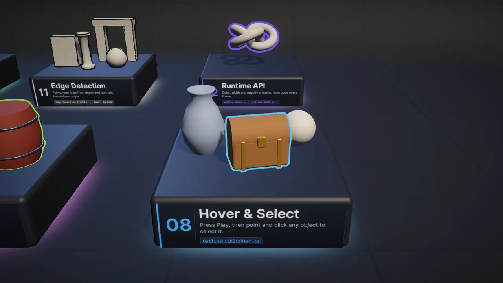
Expositor 08: el cofre empieza seleccionado; en Play puedes seleccionar cualquier objeto de la sala.
Sin código: OutlineHighlighter
Copia el scriptOutlineHighlighter está en la muestra Demo (Scripts/). Añádelo a cualquier objeto de la escena.
Asigna dos perfilesHover Profile (por ejemplo, Wide blanco fino) y Selection Profile (por ejemplo, Wide de color con Always Visible).
CollidersLos objetos seleccionables necesitan un collider y estar en Selectable Layers.
También expone eventos (On Hover Enter, On Hover Exit, On Selection Changed) para conectarlos desde el Inspector.
Dale al perfil de hover una Priority alta (por ejemplo 20) para que siempre quede por encima de otros contornos del objeto.
Hojas, vallas y recortes
Con materiales de alpha clipping (hojas, rejas, vallas), el contorno sigue la forma recortada, no el rectángulo de la malla.
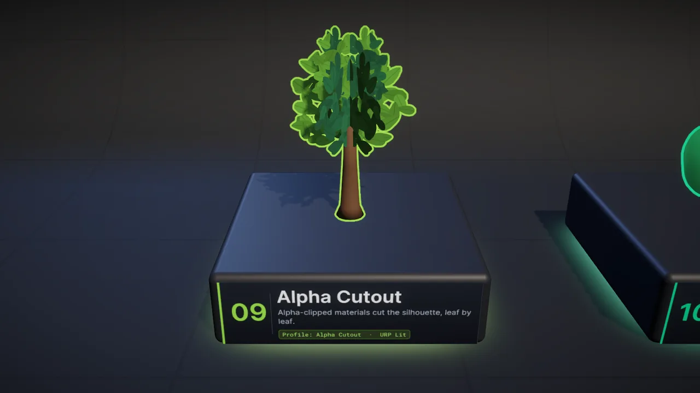
Expositor 09: cada hoja recibe su propio contorno.
Cómo se hace
Activa Alpha CutoutEn el perfil, deja Alpha Cutout marcado (lo está por defecto).
Usa un material con recorteUn material URP Lit/Unlit con Alpha Clipping activo. Easy Outline lee _BaseMap, _BaseColor, _Cutoff y _AlphaClip.
¿Shader Graph o un shader con otros nombres de propiedad? Cambia Geometry a Object Depth Pass: el recorte lo hace tu propio shader. Ver Objetos animados.
Objetos animados
Personajes con huesos, blend shapes y shaders que mueven vértices (viento, olas, gelatina): el contorno puede seguir la deformación.
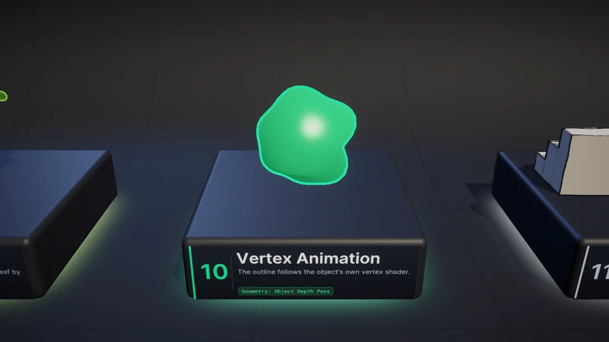
Expositor 10: el contorno sigue la deformación del shader Wobble.
Tipo de animación
Qué hacer
Skinning y blend shapes
Nada: funciona siempre, con todas las técnicas.
Vertex shader (viento, olas, Shader Graph)
Perfil Soft, Wide o Fill con Geometry = Object Depth Pass.
¿Qué hace Object Depth Pass?
Dibuja la silueta con la pasada DepthOnly de tu propio shader, que aplica el mismo desplazamiento que ves en pantalla. Todos los shaders de URP y de Shader Graph la tienen.
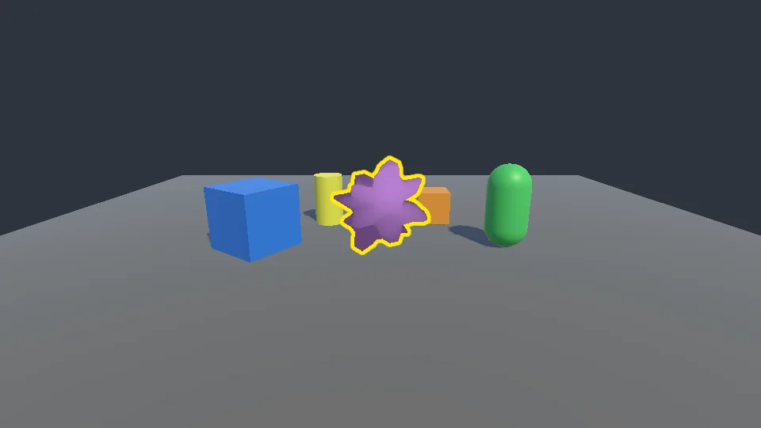
Object Depth Pass: sigue la deformación
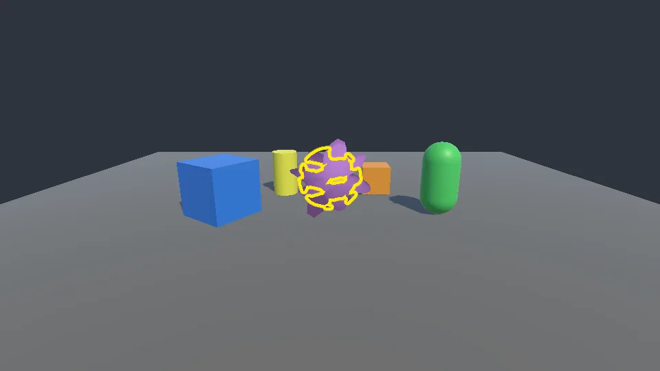
Outline Shader: usa la malla original
Fast no puede seguir animación hecha en el vertex shader. Con Object Depth Pass no hay override de color ni de grosor por objeto: se usan los del perfil.
Detección de bordes estilo cómic
Un efecto a pantalla completa que dibuja líneas donde cambian la profundidad, las normales, el color o los objetos. No necesita componentes.
Expositor 11: líneas solo en este expositor gracias a la máscara Include.
Cómo se hace
ActívalaEn el feature, marca Edge Detection › Enabled.
Crea un perfilPulsa New junto a Profile (o Create › Easy Outline › Edge Detection Profile).
Elige las fuentesDepth (siluetas), Normals (pliegues), Color (cambios de luminancia) y Sections (entre objetos).
Ajusta el trazoLine Color, Thickness y los umbrales de cada fuente.
Líneas solo en algunos objetos
Con Mask Mode eliges dónde aparecen las líneas usando Rendering Layers:
Include: solo sobre los objetos de Mask Layers (por ejemplo, solo personajes).
Exclude: en todas partes excepto sobre ellos (por ejemplo, sin líneas en la vegetación).
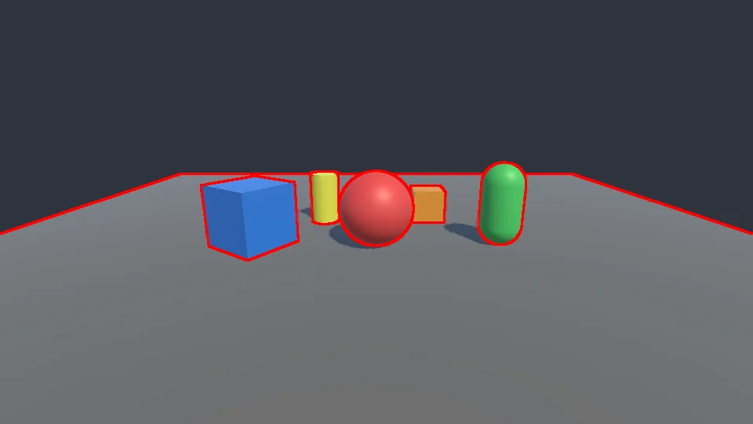
Sections (Object Id) + color
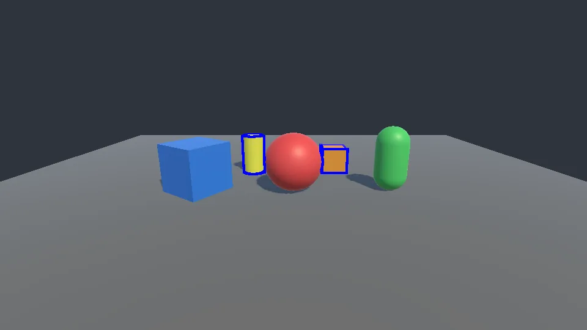
Máscara Include
¿Demasiadas o pocas líneas?
Líneas falsas en suelos inclinados: activa Grazing Angle Correction o sube Depth Threshold.
Menos líneas interiores: sube Normal Threshold.
Líneas entre objetos que se tocan: activa Section Edges.
Por defecto se dibuja antes de los transparentes, así que el agua, el cristal y las partículas quedan por encima de las líneas. Puedes cambiarlo en Injection Point.
Estilo dibujado a mano
Convierte la detección de bordes en un trazo de lápiz: líneas irregulares que “tiemblan” como en la animación tradicional.
Perfil Edges Hand Drawn de la Demo aplicado a toda la escena.
Cómo se hace
DistorsiónActiva World-Space Distortion: Amount 1.5–3 px y Frequency 2–4.
Grosor variableThickness Variation entre 0.4 y 0.7.
“Boiling”Boil Frame Rate = 6–8: el ruido cambia varias veces por segundo, como un dibujo animado.
AtenuaciónDistance Fade suaviza las líneas lejanas.
El ruido se calcula en espacio de mundo: las líneas “se pegan” a las superficies y no resbalan al mover la cámara.
Ajustes por escena
¿Un nivel con estilo cómic y otro sin líneas? Con Outline Scene Settings cada escena añade sus propias capas y su propia detección de bordes, sin tocar el renderer del proyecto.
Cómo se hace
Añade el componenteCrea un GameObject vacío y añade Easy Outline › Outline Scene Settings.
Capas propiasEn Layers, añade Outline Layers: se suman a las del feature mientras la escena está cargada.
Bordes propiosMarca Override Edge Detection y elige si se dibujan y con qué perfil.
Como es un objeto de escena, los cambios que hagas en modo Play se deshacen al salir. Es la forma segura de cambiar ajustes en tiempo de ejecución.
Prioridad de la detección de bordes: Outline Camera > Outline Scene Settings (el último activado) > feature.
Easy Outline Feature
El renderer feature que dibuja todos los efectos. Se añade una vez por Universal Renderer Data (lo hace Tools › Easy Outline › Set Up Renderers).
Campos del Inspector
Campo
Descripción
Por defecto
Outline Layers
Pila de capas: cada una tiene Enabled, nombre, Profile y Rendering Layers.
vacía
Render Outline Objects
Dibuja también los componentes Outline Object.
on
Injection Point
Cuándo se dibujan contornos y rellenos. Antes del post-procesado, el Bloom afecta a los colores HDR.
Before Post Processing
Edge Detection
Activa la detección de bordes.
off
Profile (bordes)
Edge Detection Profile, editable en línea.
—
Injection Point (bordes)
Antes de los transparentes, para que vidrio y partículas queden encima.
Before Transparents
Camera Types
Tipos de cámara que dibujan los efectos.
Game, Scene View
Depth Bias
Tolerancia al comparar siluetas con la profundidad. Súbela si algo parpadea como oculto.
Si el Inspector muestra Shader references are missing, pulsa Repair: las referencias hacen falta para incluir los shaders en las builds. Antes de cada build se reparan solas.
Outline Profile
El estilo de un contorno. Créalo con Assets › Create › Easy Outline › Outline Profile o con el botón New. El Inspector solo muestra los ajustes de la técnica elegida.
General
Campo
Descripción
Por defecto
Technique
None (solo relleno), Fast, Soft o Wide.
Wide
Color
Color HDR. Por encima de 1 brilla con Bloom.
naranja
Width
Grosor en píxeles (Wide), radio (Soft) o píxeles/unidades (Fast). Máximo 128.
4
Brightness
Multiplicador HDR del color.
1
Opacity
Opacidad del contorno y del relleno.
1
Occlusion
Visible Only, Always Visible u Occluded Only. Ver Rayos X.
Visible Only
Priority
Orden de dibujo: mayor = encima.
0
Por técnica
Campo
Técnica
Descripción
Por defecto
Width Space
Fast
Píxeles de pantalla o unidades de mundo.
Screen Pixels
Smooth Normals
Fast
Usa las normales suavizadas de UV3 si existen.
on
Intensity
Soft
Hace que el brillo llegue más lejos.
2
Hardness
Soft
0 = degradado, 1 = borde duro.
0
Resolution
Soft
Full, Half o Quarter.
Half
Blend
Soft
Alpha o Additive (glow).
Alpha
Draw Inside
Soft
Dibuja el brillo también sobre el objeto.
off
Softness
Wide
Antialiasing del borde exterior, en píxeles.
1
Silueta
Campo
Descripción
Por defecto
Geometry
Outline Shader (permite overrides y cutout URP) u Object Depth Pass (usa la pasada DepthOnly del shader del objeto: animación de vértices, Shader Graph). No afecta a Fast.
Outline Shader
Alpha Cutout
Los materiales con alpha clipping recortan la silueta.
on
Surface Fill
Campo
Descripción
Por defecto
Enabled
Rellena la silueta.
off
Pattern
Solid, Stripes, Dots, Checker o Texture.
Solid
Color
Color HDR; el alfa es la opacidad.
naranja 25 %
Use Object Color
Multiplica por el color de contorno de cada objeto.
off
Scale · Angle
Tamaño en píxeles y rotación del patrón.
12 · 45°
Thickness
Grosor de rayas y puntos (0–1).
0.5
Scroll
Desplazamiento en píxeles por segundo.
0, 0
Texture
Textura del patrón Texture.
—
Los perfiles son assets compartidos: cambiarlos en modo Play afecta a todos los objetos y, en el Editor, se guarda en el asset. Para cambios por objeto usa profile.Clone() o los overrides de Outline Object.
Outline Object
Contornea un GameObject concreto. Se añade con Add Component › Easy Outline › Outline Object o con GameObject › Easy Outline › Add Outline To Selection. Funciona en modo edición.
Campos del Inspector
Campo
Descripción
Profile
Estilo. Vacío = perfil por defecto (Wide naranja). New crea uno; Profile Settings lo edita en línea.
Color · Width · Opacity
Overrides por objeto: activa la casilla y fija el valor.
Source
Self And Children, Self Only o Manual (lista de renderers).
Generate Smooth Normals
Solo Fast: genera normales suavizadas para mallas legibles sin UV3.
Qué admite cada técnica
Override
Fast
Soft
Wide
Object Depth Pass
Color
—
Width
—
—
Opacity
—
Se usan MeshRenderer y SkinnedMeshRenderer; partículas, sprites y líneas se ignoran. El Inspector indica cuántos renderers ha encontrado.
Si añades hijos o cambias materiales por código, llama a RefreshRenderers().
Edge Detection Profile
Ajustes de la detección de bordes. Créalo con Assets › Create › Easy Outline › Edge Detection Profile. Puede compartirse entre renderers.
Campos del Inspector
Campo
Descripción
Por defecto
Line Color
Color HDR; el alfa multiplica la opacidad.
casi negro
Thickness
Grosor en píxeles (0.5–8).
1
Opacity
Opacidad global.
1
Kernel
Cross (4 muestras) o Square (8).
Square
Depth · Threshold
Bordes por profundidad y diferencia relativa necesaria.
on · 0.05
Grazing Angle Correction
Evita líneas falsas en superficies muy inclinadas.
on
Normals · Threshold
Bordes por cambio de normal.
on · 0.4
Color · Threshold
Bordes por cambio de luminancia.
off · 0.2
Section Edges
Líneas entre objetos (Object Id) o zonas pintadas (Vertex Color).
off
Mask Mode · Layers
None, Include o Exclude por Rendering Layers.
None
Distance Fade
Atenúa entre Fade Start y Fade End.
off · 30 → 80
World-Space Distortion
Amount (px) y Frequency.
off · 2 · 3
Thickness Variation
Variación aleatoria del grosor.
0
Boil Frame Rate
Regenera el ruido N veces por segundo.
0
Outline Camera
Componente opcional para cámaras. Sin él, cada cámara dibuja todo lo configurado. Se añade con Add Component › Easy Outline › Outline Camera.
Campos del Inspector
Campo
Descripción
Render Outlines
Dibuja contornos y rellenos en esta cámara.
Render Edge Detection
Dibuja la detección de bordes en esta cámara.
Edge Detection Override
Otro perfil de bordes solo para esta cámara.
Excluded Profiles
Perfiles que esta cámara no dibuja (por ejemplo, la selección en un minimapa).
Debug View
Vista de depuración propia.
Los componentes Outline Object respetan el Culling Mask de cada cámara.
Outline Scene Settings
Ajustes que solo existen mientras la escena está cargada: capas extra y detección de bordes propia, en todas las cámaras (Game y Scene View) y en modo edición. Guía: Ajustes por escena.
Campos del Inspector
Campo
Descripción
Layers
Outline Layers que se suman a la pila de cada feature.
Override Edge Detection
Sustituye los ajustes de bordes del feature.
Edge Detection
Dibuja o no la detección de bordes (si se sustituye).
Edge Detection Profile
Perfil que se usa en lugar del del feature.
Con varias escenas cargadas, las capas de todas se suman; para los bordes manda el último componente activado.
Empezar con la API
Todo lo que haces en el Inspector se puede hacer desde código. Añade using EasyOutline; y ya está.
Ensamblado
Namespace
Contenido
EasyOutline.Runtime
EasyOutline
Componentes, perfiles, feature y utilidades.
EasyOutline.Editor
EasyOutline.Editor
Configuración de renderers y bakeado (solo Editor).
Si tu código está en un Assembly Definition, añade la referencia a EasyOutline.Runtime.
Lo más usado
using EasyOutline;
// Contornear y quitar
var outline = OutlineObject.Add(enemy, enemyProfile);
OutlineObject.RemoveAll(enemy);
// Encender y apagar sin crear componentes
outline.Hide();
outline.Show();
// Cambiar un solo objeto
outline.Color = Color.red;
outline.Width = 6f;
Reacciona cuando un contorno aparece o desaparece.
// Globales: cualquier OutlineObject.
OutlineObject.Shown += o => Debug.Log($"{o.name} contorneado");
OutlineObject.Hidden += o => Debug.Log($"{o.name} sin contorno");
// Solo este contorno.
outline.VisibilityChanged += (o, visible) => { /* ... */ };
// Todos los contornos activos.
IReadOnlyList<OutlineObject> active = OutlineObject.ActiveObjects;
El script OutlineHighlighter de la Demo expone además UnityEvents (onHoverEnter, onHoverExit, onSelectionChanged) para conectarlos desde el Inspector.
Herramientas del Editor
Menús que ahorran trabajo y su equivalente desde código.
Menú
Acción
Tools › Easy Outline › Set Up Renderers
Añade o repara el feature en todos los renderers.
Tools › Easy Outline › Bake Smoothed Normals For Selection
Bakea normales suavizadas (con Undo).
Tools › Easy Outline › Documentation
Abre la documentación del paquete.
GameObject › Easy Outline › Add Outline To Selection
Añade Outline Object a la selección.
GameObject › Easy Outline › Remove Outlines From Selection
Los quita.
Assets › Easy Outline › Toggle Smoothed Normals On Import
Los problemas más comunes y cómo arreglarlos en un minuto.
No se ve ningún contorno
¿Feature en el renderer? Ejecuta Tools › Easy Outline › Set Up Renderers. Cada nivel de calidad puede usar otro renderer.
Unity 6 en modo de compatibilidad. Desactiva Compatibility Mode en Project Settings › Graphics › URP; la consola lo avisa.
Tipo de cámara. Revisa Camera Types en el feature y el componente Outline Camera.
Renderers. Solo MeshRenderer y SkinnedMeshRenderer.
Opacidad 0 o Technique: None sin relleno.
Capas: el renderer debe tener la Rendering Layer y la Outline Layer un perfil.
Funciona en el Editor pero no en la build
Mensaje Shader references are missing: pulsa Repair en el Inspector del feature o ejecuta Set Up Renderers. Antes de cada build se reparan automáticamente.
Activa Alpha Cutout en el perfil. Para shaders no estándar usa Object Depth Pass.
El brillo Soft es muy tenue
Width es el radio, Intensity alarga el brillo y Hardness endurece el borde. En modo Additive el resultado depende del fondo; con HDR y Bloom brilla más.
Hay líneas de más (o de menos) en la detección de bordes
La plataforma no admite texturas de coma flotante de dos canales. El Inspector del perfil lo indica.
Rendimiento
Cinco reglas para que los contornos no cuesten casi nada.
Pocos perfiles: las pasadas a pantalla completa se pagan por perfil visible, no por objeto.
Rendering Layers para muchos objetos: se dibujan por lotes con el SRP Batcher y el GPU Resident Drawer.
En móviles, Fast: y para Soft, resolución Quarter.
Bordes ligeros: desactiva Normals y Grazing Angle Correction si no los necesitas (te ahorras la pasada depth-normals).
Sin basura: Easy Outline no reserva memoria por frame y reutiliza sus texturas temporales entre perfiles.
Técnica
Coste por perfil (orientativo)
Fast
2 draws por objeto, sin pasadas a pantalla completa.
Soft
1 draw por objeto + blur H + blur V + composición.
Wide
1 draw por objeto + semillas + log₂(grosor)+1 pasos + composición. 8 px a 1080p ≈ 6 pasadas ligeras.
Fill
+1 pasada a pantalla completa.
Edges
1 pasada con 5–9 lecturas por fuente activa.
Plataformas
Qué está verificado, qué falta por probar y qué no se admite.
Verificado
Configuración
Resultado
Unity 6000.3 · URP 17.3 · D3D11
43/43 tests, todas las técnicas, ortográfica, MSAA, HDR, render scale y post-procesado.
Unity 6000.3 + GPU Resident Drawer
Capas, componentes y bordes con variantes DOTS instancing.
Unity 2022.3.62 · URP 14.0.12 · D3D11
43/43 tests y las mismas pruebas de renderizado.
Shaders GLES3, Metal, Vulkan
Compilan sin errores en ambos editores.
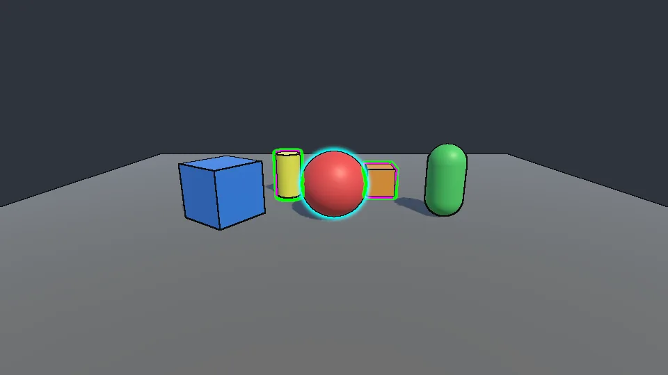
Unity 6 con el GPU Resident Drawer: capas Wide y Fast, componente Soft y bordes.
Pendiente de verificar en dispositivo
Builds de macOS, iOS y WebGL (los shaders compilan para sus APIs).
Entities Graphics (DOTS): la ruta por capas usa el mismo mecanismo verificado con el GPU Resident Drawer. Outline Object no funciona con entidades: usa capas.
Unity 6.0–6.2: solo usa APIs disponibles desde 6.0, probado en 6.3.
No soportado
Modo de compatibilidad de Unity 6 (Render Graph desactivado).
XR / single-pass instanced.
Renderer 2D.
Notas por plataforma
Windows · D3D11/12 · VulkanTodas las técnicas y formatos.
macOS · iOS (Metal)Todas las técnicas. En iOS antiguos, prioriza Fast y Soft a Quarter.
WebGL 2Wide necesita EXT_color_buffer_float; si falta, se dibuja como Soft.
Android · GLES3Igual que WebGL respecto a formatos.
Depuración
Elige una Debug View en el feature (o en Outline Camera) para ver un buffer intermedio. Vuelve a None al terminar.
Máscara del primer grupo con silueta.
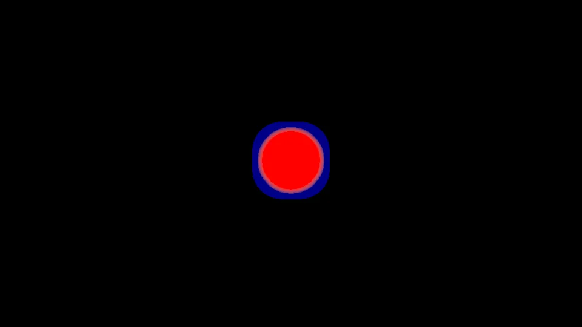
Distancia a la silueta del primer grupo Wide.
Silueta difuminada del primer grupo Soft.
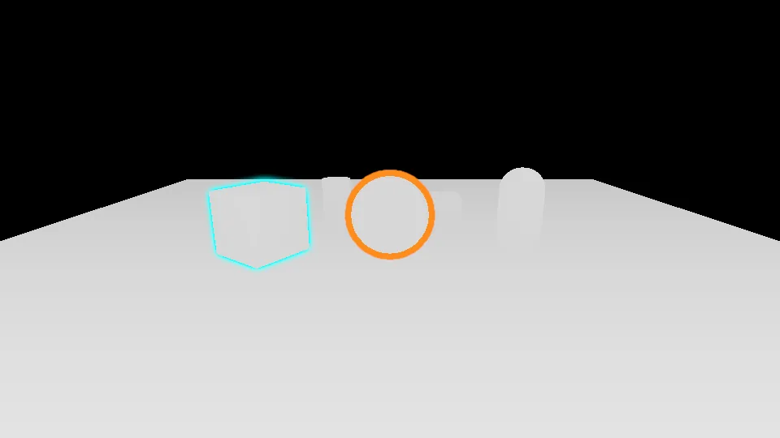
Profundidad lineal (cerca = blanco).
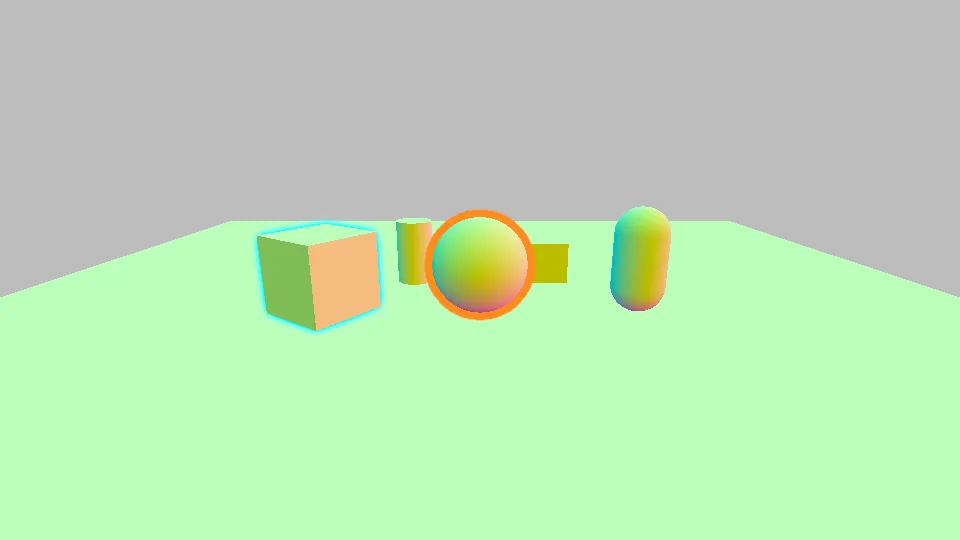
Normales en espacio de mundo.
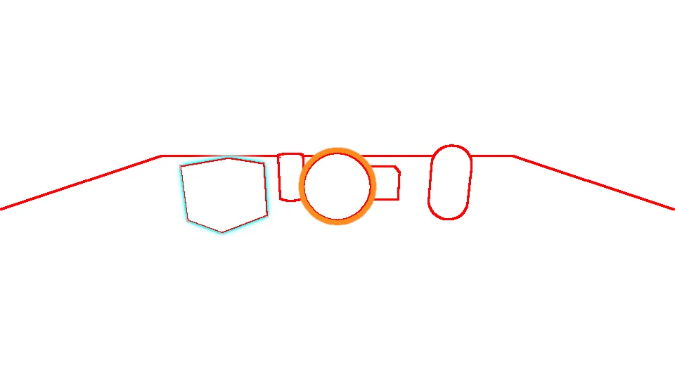
Bordes detectados sobre blanco.
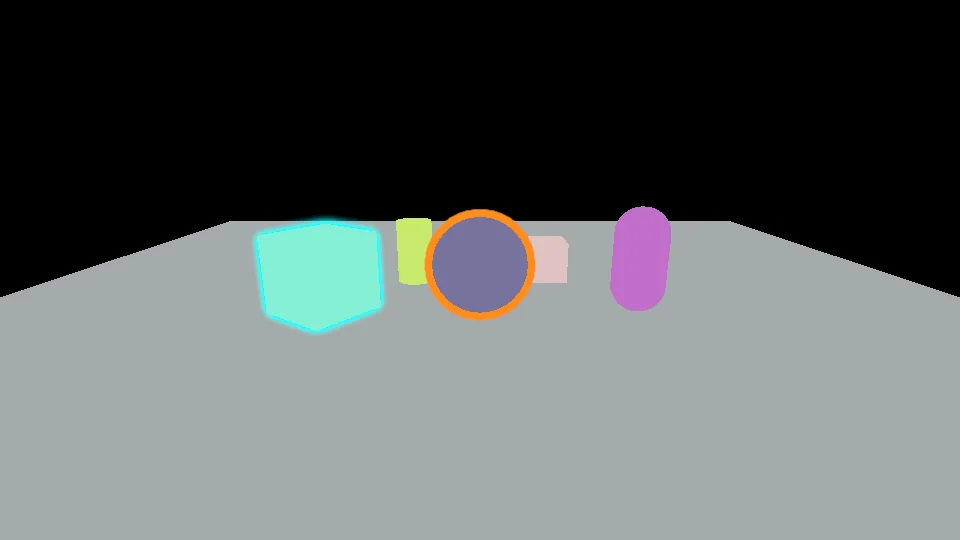
IDs de sección y máscara de bordes.
Para ver el orden de las pasadas usa el Frame Debugger (pasadas Easy Outline y Easy Outline Edge Detection) o el Render Graph Viewer en Unity 6. En la Demo, V recorre las vistas.
Cómo funciona
Para curiosos y para quien quiera ampliar el paquete.
AddRenderPasses (por cámara)
├─ OutlinePass.Setup → agrupa capas + componentes por perfil y ordena por prioridad
└─ EdgeDetectionPass.Setup → elige perfil y solicita depth / normals / opaque
Record(IOutlineRecorder) — escrito una vez para los dos backends
├─ por grupo: Fast · máscara · Fill · Soft (blur) · Wide (jump flood) · composición
└─ vista de depuración opcional
IOutlineRecorder tiene dos implementaciones: Render Graph (Unity 6) y Execute (Unity 2022.3, con un pool de texturas reutilizadas entre grupos). El código de dibujo es común.
Añadir una técnica
Añade el valor a OutlineTechnique, sus campos a OutlineProfile y su sección al Inspector.
Si necesita la máscara, devuélvelo en RequiresMask.
Añade las pasadas al shader y sus índices en ShaderIDs.cs.
Escribe RecordX(IOutlineRecorder, …) en OutlinePass. Funciona en ambos backends.
Añade un test en RenderingTests.
Changelog
Novedades de cada versión.
1.0.0
Añadido
EasyOutlineFeature con pila de capas por Rendering Layers, componentes OutlineObject y detección de bordes.
Técnicas Fast, Soft y Wide, Surface Fill y modos de oclusión.
EdgeDetectionProfile con profundidad, normales, color, secciones, máscaras, atenuación y distorsión.
OutlineSceneSettings: capas y bordes por escena sin modificar el renderer.
Backends Render Graph (Unity 6) y Execute (Unity 2022.3).
Inspectores, configuración de renderers, bakeado de normales y comprobación previa a builds.
Escena Demo con 12 expositores visibles en modo edición, muestras de scripting y documentación.
Corregido
Los componentes usan el frustum de cada cámara en lugar de Renderer.isVisible.
Unity 2022.3: las texturas temporales se reutilizan entre perfiles (mucha menos memoria de vídeo).